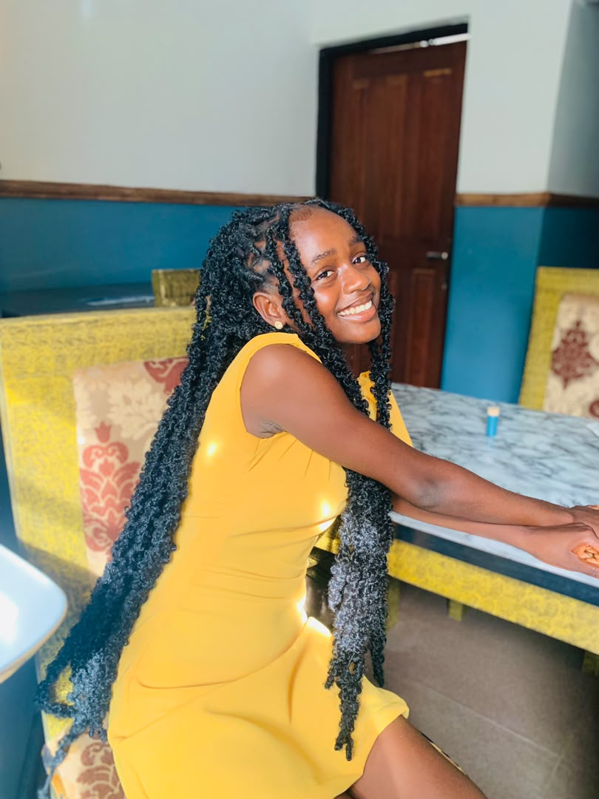

Gladys Edem | WDD 130

My name is Gladys Edem and i am from Akwa Ibom State. I enjoy reading books and travelling to explore new places. I am currently studying Software Development at BYU Idaho, where i am developing a strong foundation in computer science and web technologies. I am deeply passionate about innovation and technology, and through this course, I am excited to master front-end Web Development skills. My goal is to build clean, modern, and user-friendly websites that deliver great user experiences, both for my personal projects and to help others bring their unique ideas to life on the web!.